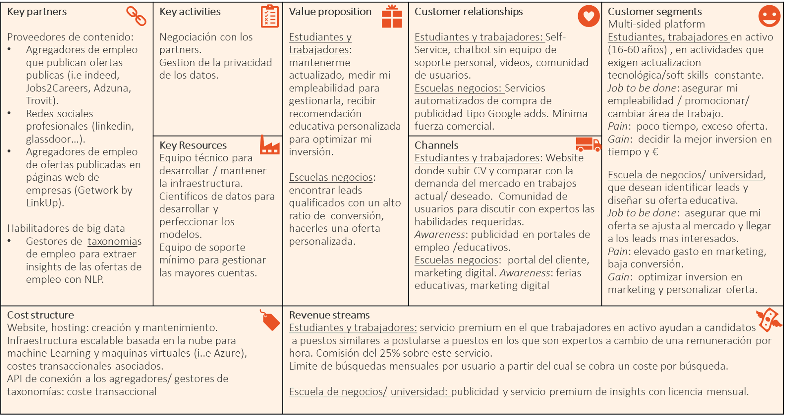

Reverse CV
Project presented in the Data Strategy executive master, MIOTI
In 2020 Microsoft launched an initiative to help 25 Mill people develop the skills needed in the new digital economy.
Based on the combined power of Linkedin, Microsoft and Github, Microsoft is uniquely positioned to get the data on skills demand and supply and offer individual learning paths and low cost certification to job seekers.
My solutions offers job seekers a personalized learning plan based on market demand, and an automated CV creation tool based on job offer's specificities.
There are 4 elements in the solution:
1) Web scraping and/or API solution to extract job opportunities by keyword from a job aggregator such as the techjobsearch project.
A script in R with Rvest package and based on job scraping in indeed is defined here: job scrape prototype
2) NLP data extraction algorithm, supported on job skills taxonomies such as the ones described here.
3) A visual outcome that compares job skills evolution to the job seeker's current skills set to help him define a continuous learning plan.
4) Reverse CV tool that helps users adapt their CV to a particular offer.
The Business model of this technical solution is described in the following canvas: 